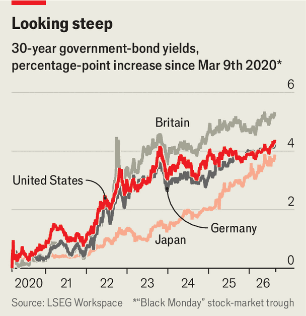

Why bond markets are unnerving rich-world politicians
As stocks rise ever higher, yields have been climbing ominously
Aug 20th 2026
BOND MARKETS are unsettled, and so, in turn, is America’s government. On August 19th the Treasury said that from next month it would increase its own purchases of longer-dated debt. This reflects “increasing administration unease” about yields, believe analysts at Deutsche Bank.
Officials have good reason to worry about rising borrowing costs. The yield on ten-year Treasuries reached its highest since January 2025 on August 18th. Scarier still, that on 30-year bonds briefly passed 5.3%, its highest since 2007. And America is not alone. Bondholders are demanding more from governments across much of the rich world (see chart). Yields on British, French and German long-dated bonds have all reached levels not seen in more than a decade. Japanese 30-year yields, long the lowest in big economies, are close to an all-time high. The rout eased somewhat on August 19th. But yields are unlikely to fall much soon. What is amiss?

For one thing, unlike equity investors, bond traders appear to be reading the news. The Strait of Hormuz remains largely shut and looks likely to stay that way for a while. Fuel prices in America—particularly for diesel, on which much of commercial haulage relies—have soared in turn. The fund managers surveyed monthly by Bank of America, most of whom are heavily invested in stocks, are sanguine. On average, they expect Brent crude, the global oil benchmark, to trade at $76 a barrel by the end of the year, only slightly up from before the start of the war. Bond markets seem less sure.
Accordingly, they are pricing in continued inflation. On August 19th Britain reported consumer-price inflation of 2.9% for the year to July, up from 2.6% in June, as higher energy prices bit. In America, core inflation (which excludes food and energy) eased last month. But bond traders seem to have pared back bets on future rate rises after recent remarks by the Federal Reserve’s new chairman, Kevin Warsh.
Another recent concern is that government debt-issuers have new competition. In recent months large tech firms have sold some $75bn-worth of bonds to fund investments in data centres for artificial intelligence. The spree has already pushed their combined debt issuance to nearly twice last year’s total, estimates Goldman Sachs, a bank. All sorts of businesses are getting in on the bond bonanza. Some 40% of large-scale debt issuance (ie, more than $10bn) by investment-grade issuers has come from outside tech, Goldman calculates. So bond-buyers have a surfeit of investment-grade options from which to choose. Many believe the AI boom will push up interest rates by increasing competition for capital.
Still, the biggest reason for creeping yields is of long standing: concerns over government debts and deficits. On August 19th America’s Treasury said federal debt had passed $40trn (130% of last year’s GDP) for the first time. The government’s deficit is around 6% of GDP. Such worries also show up in differences between countries. The spread between French and German ten-year yields has reached its widest since 2012. Bond markets now expect a higher yield for Japanese debt than for Chinese debt, reversing the conventional order. In both France and Japan investors assess that politicians lack the will to trim spending or raise taxes meaningfully.
Governments have few other good options. At the Fed’s meeting in June members of its rate-setting committee were briefed on how ownership of Treasuries has shifted from “relatively price-insensitive official-sector holders to more price-sensitive private investors”. That is likely to increase the premium bondholders expect for long-term debt. In response to such pressures America, Britain and Japan have increased their sales of shorter-term bonds with lower yields. But as a result their debt stocks will roll over more often, raising the risk that such moments coincide with high interest rates.
A second unenviable option is for central banks to buy back more debt. But many of them had hoped to shrink their balance-sheets, not to expand them. They may therefore be reluctant to rely too heavily on bond purchases as a tool to reduce yields. All this means that bond markets are likely to remain wary. Interventions such as the Treasury’s may help for the time being. They are unlikely to placate buyers for long. ■